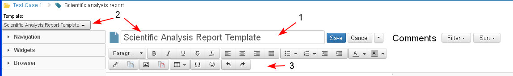

The sections are main parts of iDocs. Document content could not exist out of a section. The user may add new sections in an iDoc only when the document is in Edit mode.
Each document has a default section which is created with the creation of the document. The default section does not have a title and could not be deleted, moved, collapsed, etc.
The default section has the following widgets in it:
- Title widget (1). The text in the title of the widget corresponds to the title of the default template for the selected document type (2).
- Text Editor (3)
The user could add any other widgets in the default section and write text in it.

Create New Section
- A document is in edit mode. The user positions the cursor where a new section should be added. Then he/ she changes the text style from Paragraph to Heading (1-2).
- A new empty section appears in the Content (3) and in the Navigation tree (4). Each section has a title and content.
- The text "Empty section" appears in the title field (3) when a new section is created and the user must enter text in this field.
- The section content pane is also empty by default.
Each new section has an integrated text editor by default.

- The user enters the name of the new section, which appears automatically in the navigation tree.
- The user may add any widget in the new section by drag and drop it from the Widgets palette (1-2-3). When a new widget is added in the section, the text "Add widget title" is visible in the Title field (3).

- The user clicks on the title field and enters the title for of the new widget, inserts text and when all updates are ready (1-2-3-4-5) selects the Save button (6).

- This automatically creates a new section in the iDoc, based on the heading number (1-2). The text marked as Heading becomes the section title and if there is text beneath - it becomes part of the section body. The possible comments actions appear in the Comments Section (3).

Add New Section